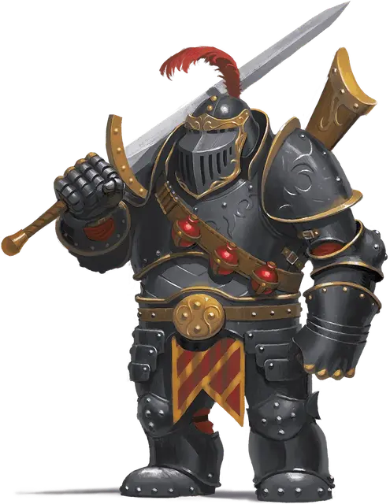

Гифф-штурмовик
Giff Shock Trooper
Средний Гуманоид, любое мировоззрение

Класс Доспеха 18 (латы)
Хиты 93 (11к8 + 44)
Скорость 30 футов, плавая 30 футов
| мод | спас | ||
|---|---|---|---|
| СИЛ | 20 | +5 | +8 |
| ЛОВ | 14 | +2 | +2 |
| ТЕЛ | 18 | +4 | +7 |
| мод | спас | ||
|---|---|---|---|
| ИНТ | 11 | +0 | +0 |
| МДР | 12 | +1 | +4 |
| ХАР | 13 | +1 | +1 |
Навыки Атлетика +8, Восприятие +4, Запугивание +7
Чувства пассивное Восприятие 14
Языки Общий
Опасность 6 (2300 опыта)
Бонус мастерства +3
Особенности
Знатоки огнестрельного оружия. Знание оружия позволяет гиффу игнорировать свойство «перезарядка» любого огнестрельного оружия.
Безрассудный рывок. Если гифф переместится как минимум на 20 футов по прямой и окажется в пределах 5 футов от существа Большого размера или меньше, то цель должна преуспеть в спасброске Силы Сл 16, иначе получит 7 (2к6) дробящего урона и будет сбита с ног.
Осадное чудовище. Гифф наносит двойной урон объектам и сооружениям.
Действия
Мультиатака. Гифф совершает две атаки Двуручным мечом или Мушкетом.
Двуручный меч. . Рукопашная атака оружием: +8 к попаданию, досягаемость 5 фт., одна цель. Попадание: 15 (3к6 + 5) рубящего урона.
Мушкет. . Дальнобойная атака оружием: +5 к попаданию, дистанция 40/120 фт., одна цель. Попадание: 15 (2к12 + 2) колющего урона.
Звуковая бомба. Гиф поджигает бомбу размером с грейпфрут и бросает её в точку в пределах 60 футов, где она взрывается. Все существа в пределах 10 футов от этой точки должны совершить спасбросок Ловкости Сл 15, получая 18 (4к8) урона звуком при провале или половину этого урона при успехе. После того как гифф бросит бомбу бросьте к6. Если выпадет «4» или меньше, у гиффа больше не остаётся бомб для броска.
Описание
Гиффы-штурмовики обучены совершать наступления на вражеские крепости. Каждый из них мастерски изматывает противника на расстоянии с помощью огнестрельного оружия, а затем вступает в ближний бой, чтобы добить оставшихся в живых.
Гифф
Сложно не заметить гиффа в комнате: это дородный народ ростом 7 футов с головой бегемота. Вы часто можете встретить гиффов в Диком космосе и связанных с ним портах в качестве космических наемников. Эти бойцы славятся своей боевой подготовкой и любовью к взрывчатке. Обычно они вооружены сверкающим огнестрельным оружием.
Каждый аспект общества этих космических гифов организован по военному образцу. С рождения и до самой смерти, у каждого есть воинское звание. Продвижение по службе не зависит от возраста, а лучшим в награду за доблесть.
Многие полки гиффов специализируются на мушкетах и гранатах. Чем сильнее взрыв, ярче вспышка и гуще дым, тем славнее тот, кто владеет оружием.